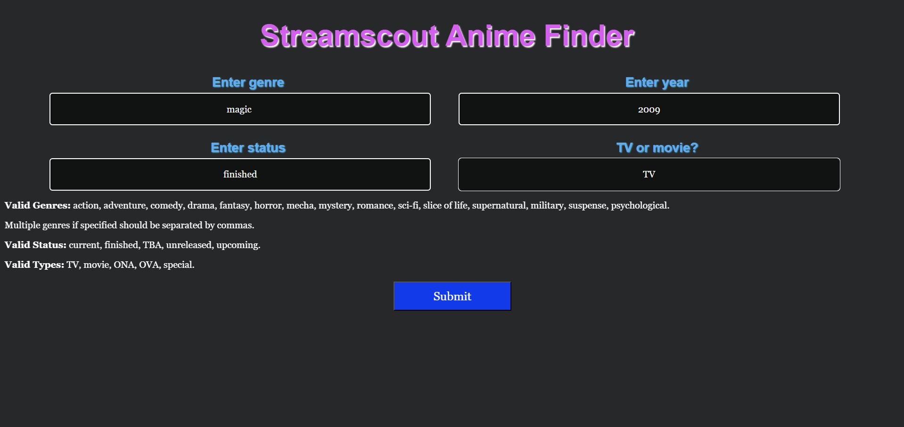
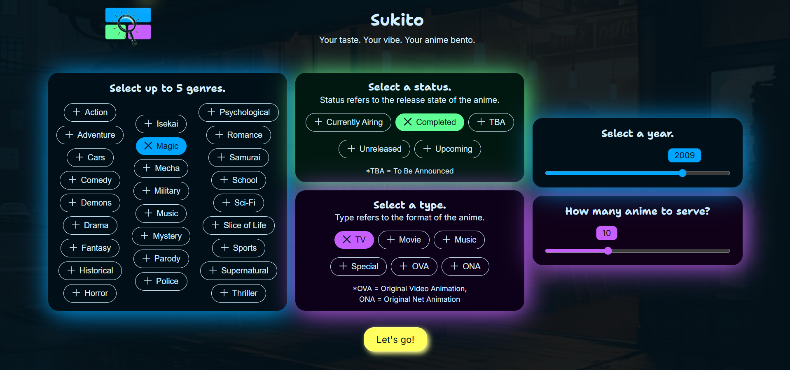

— ✦ From Automation to Aesthetics ✦ —
Originally built as a functional UI for a UiPath RPA backend, Sukito (formerly Streamscout) started out... clunky.
Navigation was awkward.
The UX didn’t reflect the thought I put into the logic behind it. So I tore it down and redesigned it from scratch — not just to make it prettier,
but to learn what good UI/UX really feels like — and to build something I'm proud to showcase.
✦ Old Website (Streamscout)
Streamscout Input Page
Streamscout Anime Finder is a minimalist, utility-focused web tool originally designed to integrate seamlessly with a UiPath RPA backend. The interface intentionally avoids aesthetic embellishments in favor of raw functionality. Text-based input fields were used instead of buttons, as they’re simpler for RPA bots to interpret. The overall layout is basic and prioritizes automation compatibility over design, with no stylistic elements or animations. It serves purely as a backend-friendly interface, not a visual experience.
✦ New Website (Sukito)
Sukito Input Page
Sukito is a modern, design-driven reimagining of the original Streamscout platform. While the backend was rewritten entirely in Flask for performance and flexibility, the key shift lies in the frontend — rebuilt from scratch with a user-first mindset. Sukito swaps the utilitarian layout for a Bento-inspired interface that emphasizes visual clarity, UX accessibility, and interaction flow. It trades Streamscout’s raw automation focus for a smoother, more guided user experience, without sacrificing backend efficiency. Though still lightweight and minimal, Sukito is no longer just functional — it's thoughtfully designed.
✦ What Changed?
Input
Output
Old Website (Streamscout)
Problems with Streamscout
New Website (Sukito)
How Sukito Solves these Problems
✦ Case Study
Why Bento?
I chose the bento layout because of its structured, compartmentalized design—each item in a bento box has its own dedicated space,
which makes the overall experience clean, organized, and easy to navigate. That concept aligned perfectly with the goal of simplifying
and visually segmenting the various UI elements in my redesign. Since the project was anime-themed, incorporating a Japanese layout
felt both meaningful and fun. That’s when the idea of presenting it as an “anime bento” came to me—a playful metaphor that ties together
the structured UI with the cultural roots of anime.
Header
For the header, I wanted a simple yet meaningful logo that could represent the idea of a “bento” without explicitly referencing food. The focus was more on structure and organization. I added a magnifying glass icon to subtly convey the concept of “searching,” which is central to the platform’s purpose. To complete the identity, I used AI tools to generate a fitting name and tagline that would capture the essence of the project while keeping it memorable and on-theme.

Since not everyone may be familiar with the term "bento" in a design context, I decided to include a
subtle tooltip near the header. When users hover in that area, the tooltip briefly explains what a bento is
—highlighting its structured, compartmentalized nature. This small detail ensures clarity for new users
without disrupting the overall flow or layout.
Usability
For the genre, type, and status inputs, I designed interactive pill-style buttons that respond to user actions.
On hover, each pill glows in its respective accent color, providing immediate visual feedback. When clicked,
the pill adopts a distinct active state—helping users easily identify which options they've selected. This not only
enhances usability, but also acts like a visual “cart,” allowing users to quickly see all their applied filters
in one place.

For filters like "status" and "type", I also added subtle helper text beneath the heading. These filters often contain
terms that might not be immediately clear to all users, so the helper text offers quick, non-intrusive guidance—
making the interface more beginner-friendly without cluttering the layout.
On the output page, the leftmost panel displays all the filters the user had selected. This removes the need to second-
guess what was chosen earlier. To strengthen the visual connection, the panel reuses the same color scheme
as the input filters — for example, year and genre appear in blue, status in green, and type in purple —
making it easy for users to instantly recognize and relate their previous choices to the current results.
Error Handling
Edge cases—such as clicking “Previous” on the first result or “Next” on the last—are handled gracefully using
attention-grabbing, non-intrusive popups instead of default browser alerts, which tend to interrupt user flow.
Similarly, when no matches are found, a clearly visible popup is shown within the input page itself, allowing
users to adjust their filters and try again immediately. This approach minimizes friction and maintains a
smooth, uninterrupted experience.
✦ Tools & Tech Stack
Figma
UI layout planning and early-stage wireframing
Canva
Icon design and visual assets
ChatGPT
Technical troubleshooting, UX copywriting
help, and feature ideation
HTML
Structuring the page content and components semantically
CSS
Defining the visual style—colors, spacing, typography, and UI details
JavaScript
Handling interactivity, animations, and dynamic DOM updates
Flask
Serving pages, handling routing logic, processing filters, and making the API call
Future Improvements
Planned enhancements include making the platform fully responsive across all devices and screen sizes.
I also aim to let users save their anime recommendations—either by downloading them as a PDF,
sending via email, or storing them in a personal account.